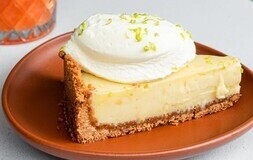
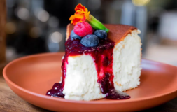
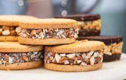
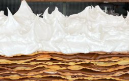

DULCES
La pastelería dulce es un verdadero paraíso para los amantes de los postres. Cada creación está cuidadosamente elaborada con ingredientes de alta calidad y amor por la repostería, asegurando que cada bocado sea una experiencia dulce y memorable. Ven y descubre el encanto de nuestra pastelería dulce, que hace que cada visita a nuestra cafetería sea aún más especial.
-

Key Lime
Base de galleta desmenuzada, un relleno suave y cítrico hecho con jugo de lima, y una capa de crema batida.
-

Cheesecake
Base de galleta crujiente, una capa de queso crema suave y sedosa,y frutos rojos, como fresas, frambuesas y moras .
-

Alfajores
Todos rellenos de dulce de leche. Puedes elegir entre: Dulce de leche, Pistachos o Maicena.
-

Torta Rogel
Capas finas y crujientes de masa de hojaldre intercaladas con dulce de leche, y cubierta con merengue.